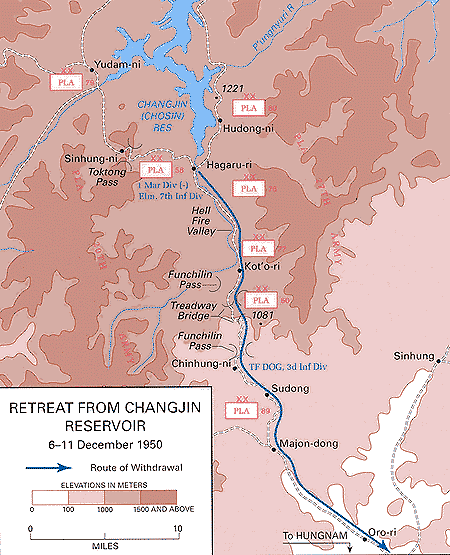

중공군 저지선을 뚫고 이동하는 미 해병대
1950년 11월 미 제10군단 예하 미 제1해병사단이 장진호 북쪽으로 진출하던 중 중공군 제9병단 예하 7개 사단과 충돌하여 2주간에 전개한 철수작전으로
UN연합군의 인천 상륙 작전의 성공, 지속적인 북한군의 패배는 국군과 UN연합군에게 전쟁은 이제 끝난것이나
다름없는 것인것 처럼 보였습니다. 하지만 북한의 김일성은 더이상 밀리게 된다면 전쟁의 패배를 확신했고 중국과
소련에게 군사 지원요청을 보내게 됩니다. 중국은 이를 승인하고 1950년 10월 19일 펑더화이를 총사령관으로
중공군 대군 30만명을 1차로 보내 압록강으로 몰래 진격을 합니다. 이들의 임무는 국군과, UN군의 공세를 막아내는
것으로 이들의 참전은 전쟁의 판도를 바꾸게 됩니다.
11월 2일 함흥 북방 수동 일대에서 미국 해병1사단 7연대 1대대와 북한군 잔존 병력들 사이 전투가 벌어집니다. 그런데
전투 중 중공군 포로를 발견하게 되었고 이로인해 중국이 전쟁에 참전했다는 것을 알게됩니다. 그런데 연합군은 단지 이를
중공군은 소수 지원병만 왔을거라 판단했습니다. 하지만 30만명의 중공군이 이미 전쟁에 참전한 상태였고 본격적인 대공세를
펼칩니다.

장진호에서 흥남으로 향하는 후퇴로 지도
11월 27일 중공군은 유담리에 지속적인 공격으로 연합군을 포위하면서 본격적인 전투가 시작됩니다. 중공군의 개입으로 전세가 완전히 뒤바뀌자 미군은 긴급 작전회의를 열게 됩니다. 기존의 북진계획을 재검토 해야했으며 장진호에 있는 모든 부대를 함흥 ~ 흥남 작전기지로 이동해야 한다는 명령을 하달하였습니다. 27일밤 유담리 일대에서는 중공군 제 79사단, 제89사단은 유담리에 진격하기 시작했고 이 공격으로 미 해병1사단은 막대한 피해를 입게됩니다. 한편 장진호에 있던 연합군 3개 연대도 중공군의 공격으로 엄청난 피해를 입게 됩니다.
11월 27일 ~ 12월 11일까지 미 해병1사단은 전사자 3,637명, 비전투 사상자 3,657명을 기록하게 됩니다. 비전투 사상자는 대부분이 동상으로 인한 사망이였는데 당시 극심한 추위와
폭우가 내렸기 때문이였습니다. 하지만 중공군 역시 25,000명의 전사자와 12,500명의 부상자를 속출할 정도로 극심한 피해를 입습니다. 양쪽 군대 모두 극심한 추위로 동상에 걸려 사망하는
이가 수두룩 했으며 고도의 산악지대와 영하 20도 ~ 32도의 평균 온도로 극심한 추위에서 전투를 치뤄야 했습니다. 물자와 보급품 역시 무기의 경우 경기관총은 극심한 추위로 무기가 얼어붙어
불발이 되는것을 방지하기 위해 적이 있든 없든 주기적으로 무기를 발싸해야 했으며 이들의 개인화기인 m1개런드 소총 역시 소총의 잔고장을 없애주기 위해 발라주는 윤활유가 얼어붙어 버리는것을
방지하기 위해 엷게 발라야만 했습니다.
이 전투로 국군과 UN연합군은 끝날것 같은 이 전쟁이 중공군의 개입으로 장기화 될것이 분명하다고 판단하게 됩니다. 북한군은 다시 평양을 재탈환 하였고 국군과 UN군은 흥남에서 철수를 할 수 밖에
없는 상황이였죠 중공군의 개입으로 전선은 다시 밀려났으며 이때부터 북한군의 주력은 사실상 중공군이나 다름이 없었습니다. 연합군은 전선 유지를 위해 후퇴를 하게되고 북한은 다시한번 대한민국을
적화통일할 반격의 기회를 엿보게 됩니다.
참고자료
『6·25전쟁사 7 -중공군참전과 유엔군의 철수』
한국민족문화대백과(장진호전투)